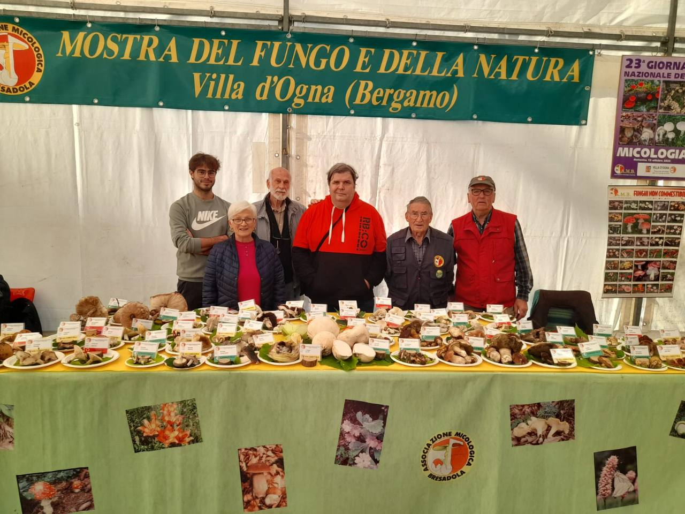
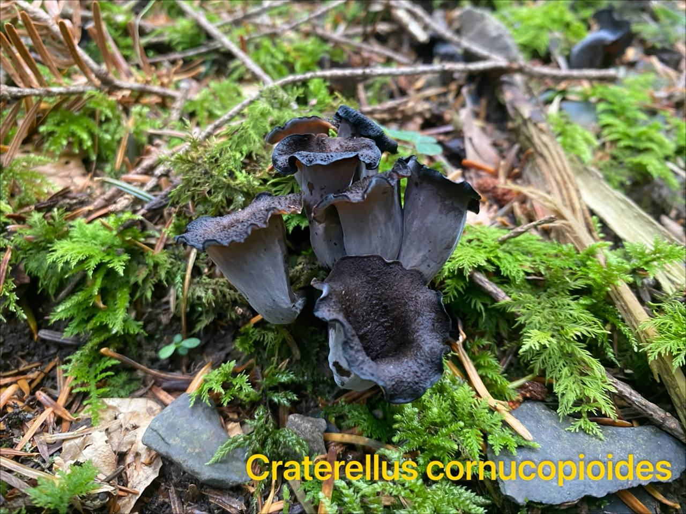
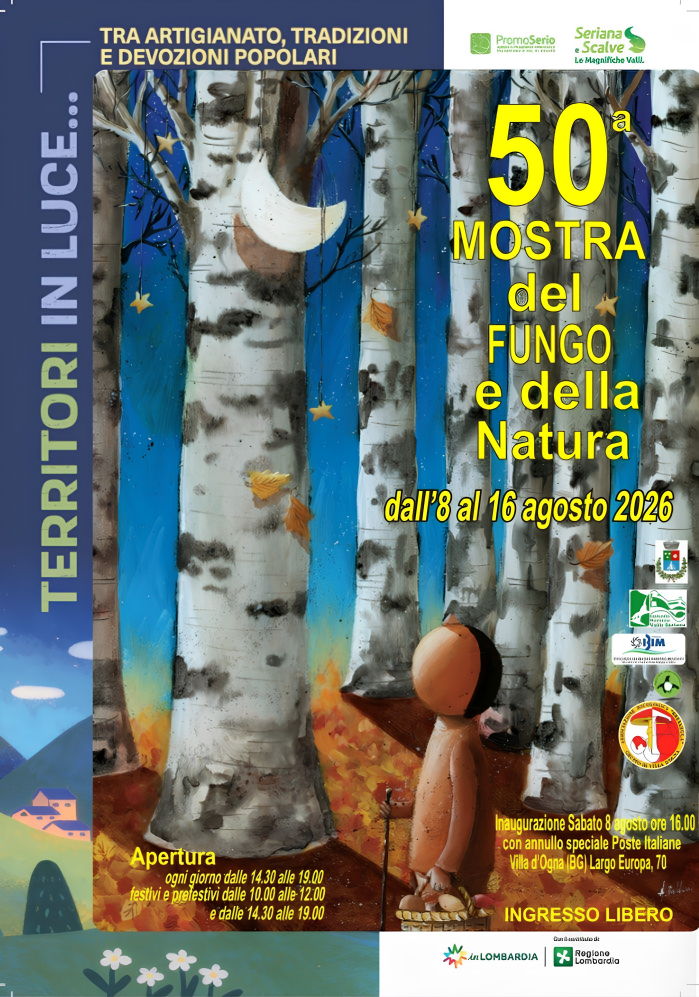
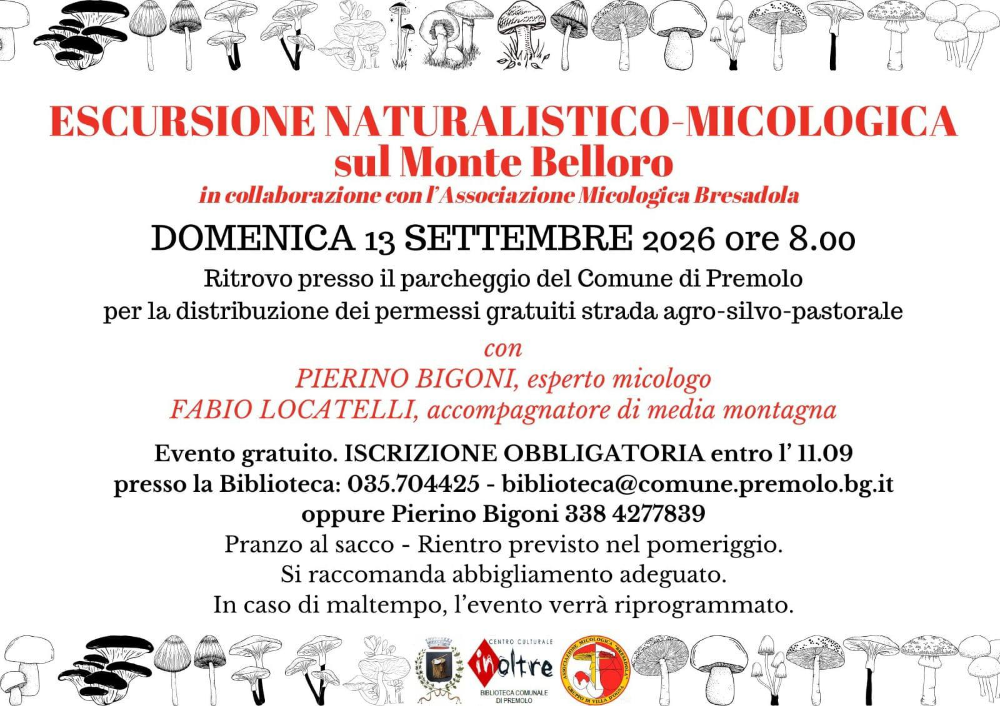
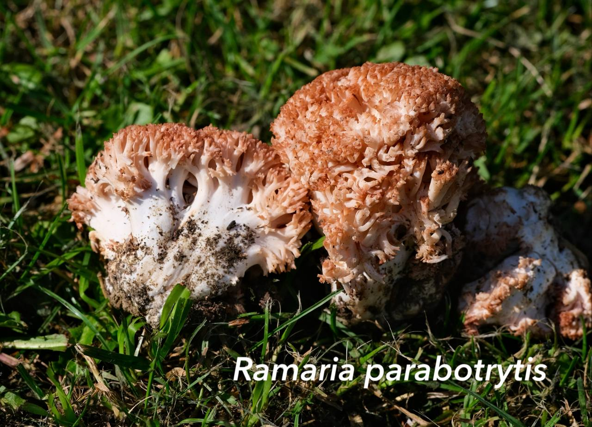
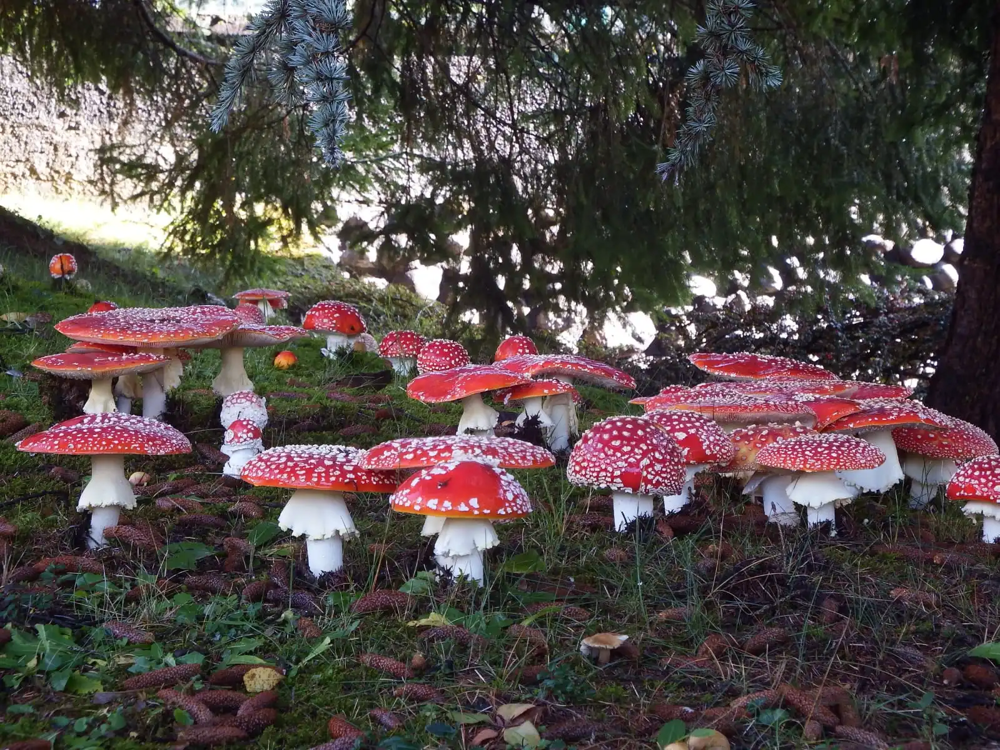
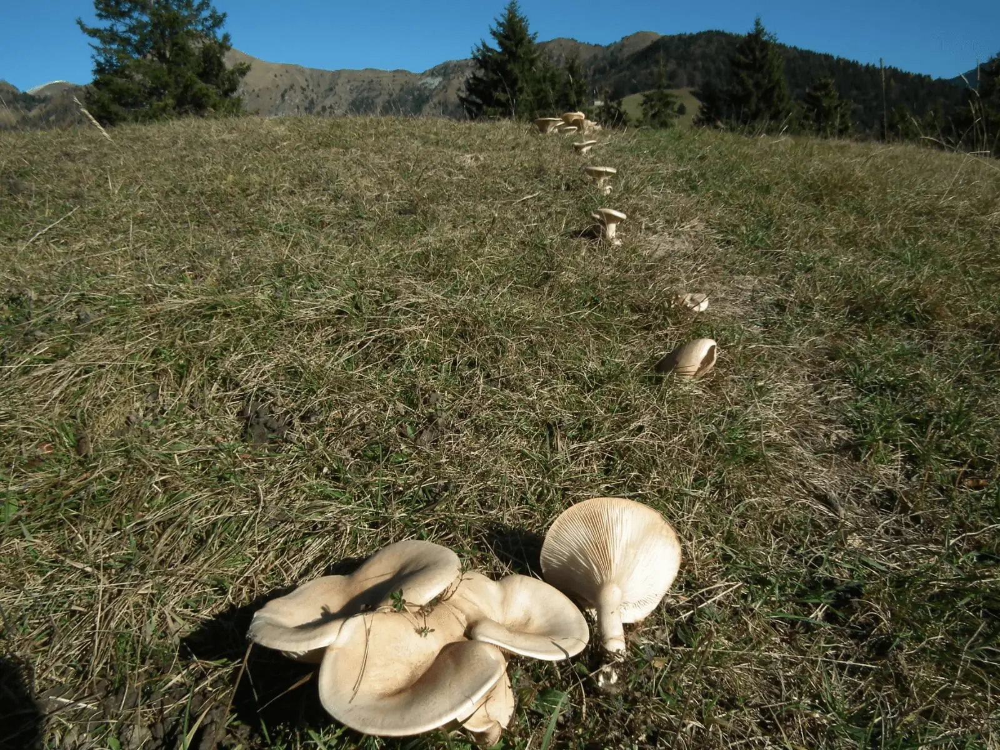
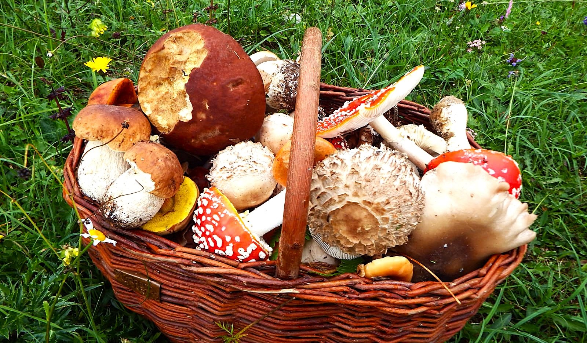
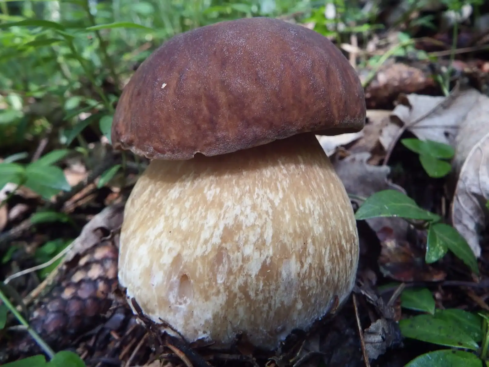

🔬
Ricerca e studio
Censimento e documentazione delle specie fungine locali, in collaborazione con enti scientifici e micologi esperti.
🍄 50ª Mostra del Fungo e della Natura — dall'8 al 16 agosto 2026 a Villa d'Ogna

Associazione Micologica Bresadola · Villa d'Ogna
Studiamo, tuteliamo e condividiamo la biodiversità fungina della Val Seriana da oltre 50 anni — tra ricerca, escursioni e divulgazione per tutte le età.
anni di attività
comuni della Valle Seriana coinvolti
eventi e uscite ogni anno
specie fungine censite

Chi siamo
Il Gruppo Micologico AMB Villa d'Ogna riunisce appassionati, esperti e famiglie attorno a un obiettivo comune: conoscere il mondo dei funghi per proteggerlo. Organizziamo escursioni, mostre, corsi nelle scuole e momenti di identificazione guidata, sempre con il supporto di micologi qualificati.
Cosa facciamo
Censimento e documentazione delle specie fungine locali, in collaborazione con enti scientifici e micologi esperti.
Uscite sul territorio per imparare a riconoscere habitat e specie, in sicurezza e in compagnia.
Progetti nelle scuole e incontri pubblici per avvicinare grandi e piccoli alla micologia.
Promozione di una raccolta consapevole e rispettosa, nel rispetto delle normative vigenti.
Ultime notizie

Dall'8 al 16 agosto torna l'appuntamento estivo, tra artigianato, tradizioni e devozioni popolari.

Un percorso di 6 km alla scoperta di habitat e specie fungine, in collaborazione con la Biblioteca di Premolo.

Come e dove far controllare i funghi raccolti prima di consumarli, in tutta sicurezza.
Uno sguardo sul bosco




Unisciti a noi in una delle prossime escursioni o scrivici per qualsiasi informazione: saremo felici di accoglierti.